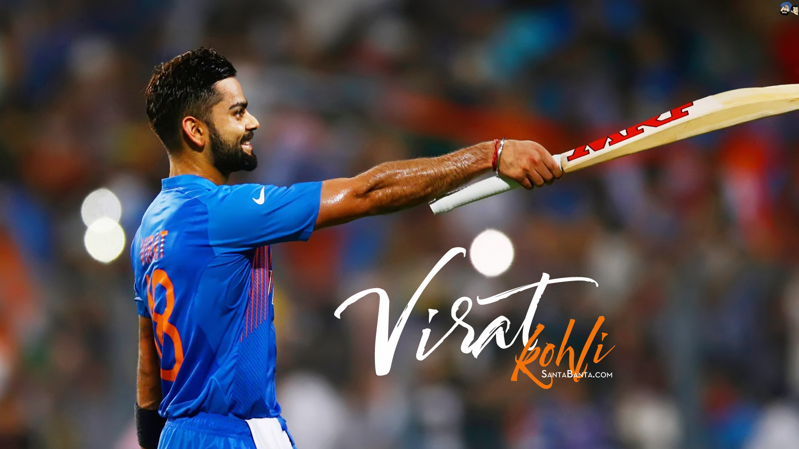

Born 5 November 1988
About the Run Machine/King Kohli
Virat, a 13-year-old, is selected for the Delhi Under-15 team for the Polly Umrigar Trophy in October. He ends the campaign as Delhi's leading scorer.
- -Virat is chosen for the India Under-19 team for the first time after making an impression at the youth level for Delhi. He then had a fantastic tour of England, averaging over 100 in the one-day series.
- -In Malaysia's Under-19 World Cup, Virat led India to win and finished the competition as one of the top three run scorers. His innate leadership abilities attracted the proper kind of attention.
- - Royal Challengers Bangalore, an IPL team, signs Virat on a youngster contract for just Rs 12.5 lakhs when he is still a minor.
- - Virat received his maiden call-up to the Indian ODI team and participated in the entire five-match series against Sri Lanka on the road. In the fourth game of the series, he hit his first 50, a 54-run inning.
- -When Virat got his first ODI century against Sri Lanka, 107 off 111, it was worth the wait for him to return to the national squad.
- -Virat participated in every game of India's victorious World Cup campaign in 2011, scoring his only century against Bangladesh in the opening match. Despite the fact that he didn't exactly light up the tournament with his bat, his final-round remark to Sachin has since become legendary in cricket: "Sachin Tendulkar has carried the weight of the nation for 21 years." Time for us to carry him on our shoulders
- -In the fourth and final test against Australia in Adelaide, Kohli achieved his first test hundred under somewhat dramatic circumstances. He just avoided being run out when batting with Ishant Sharma and nearly ran out of partners. However, he was unable to save India. 4-0 was our series loss.
- -Virat led India to the CB Series final in Australia with what is undoubtedly one of the best ODI efforts by an Indian batsman, hitting 133 not out against Sri Lanka off just 86 balls. Hobart witnessed one of the greatest batting performances in history as India, who was chasing 321, reached the score in 37 overs.
- -In place of an injured MS Dhoni, Virat was selected the stand-in ODI captain when India visited the West Indies. Earlier that year, he had also been named captain of his IPL team, the Royal Challengers Bangalore.
- - When summoned to replace an ailing MS in Australia once more, Kohli experienced his first taste of Test captaincy. In Adelaide, he celebrated by scoring centuries in both innings. In what was an exceptional
- -In addition to purchasing a share in the IPTL team UAE Royals, Kohli expanded his interest in tennis after becoming a co-owner of ISL football club FC Goa the year before.
- -He produced arguably his finest innings of his young career as India defeated Australia in Mohali to go to the ICC World T20 semifinals. As opposed to the lappa kind of cricket that is typically associated with 20 over cricket, his 82 off 51 balls was a magnificent effort, carved with timing and technique.